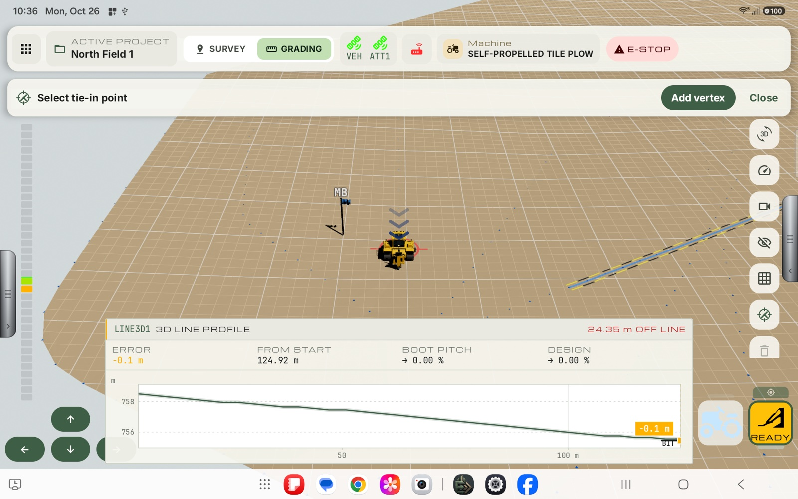
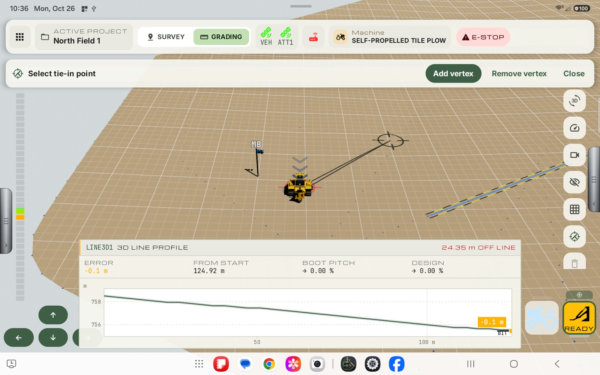
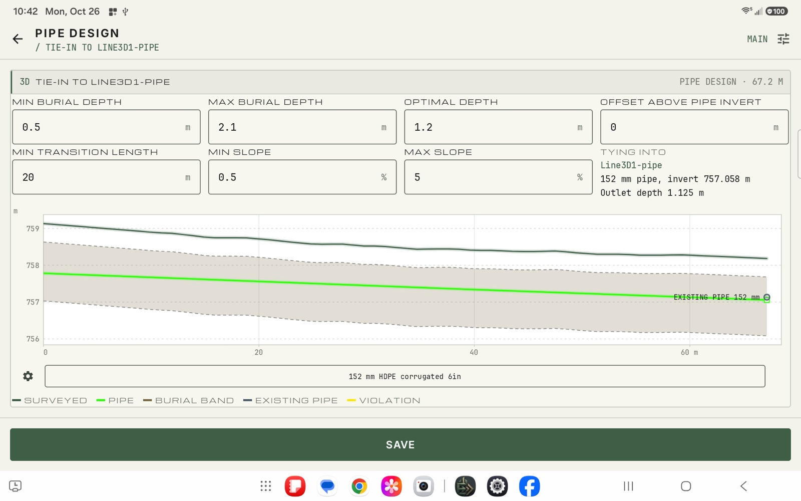

Tap-to-select
Place the reticle on the map, add vertices for corners, and it turns green when it finds the pipe.
User Manual › Tie-ins
Tie-ins
Tap the map to place the connection, or let Exodus notice you are heading toward an existing pipe and offer to tie in. The design then sets the new pipe's outlet to meet the existing one.
Place the reticle on the map, add vertices for corners, and it turns green when it finds the pipe.
Exodus asks you when your line heads toward an existing pipe.
A sensible default centers a smaller pipe in a larger one, and you can adjust it.
If the pipes will not meet properly, the design says so in plain words.
On this page: Tie-in: connecting a new pipe to an existing pipe · Pipe connection suggestion · The Pipe Design screen for a tie-in
A tie-in makes a new pipe run into a pipe that has already been designed. The new pipe's outlet is fixed to the existing pipe, and the design offers an offset so the two meet properly.
There are two ways to start one:


| Item | Meaning |
|---|---|
| Heading | The compass direction from where you are to the connection. |
| Distance | How far it is. |
| Segment / Total | The slope of the last leg and of the whole route. |
| Pipe name | The existing pipe it will join. |
A profile card also appears, showing the ground between the machine and the pipe and the existing pipe's depth where it joins.

Tapping Yes opens the Pipe Design screen (see The Pipe Design screen for a tie-in).
In the screenshot above, the pill at the top reads 152 MM → 102 MM - 33.28 m. That is the countdown to the next station on the active design, described in Countdown to a station while grading.
While you record a line, Exodus watches where you are heading. When the line is heading toward an existing pipe, it asks:
Are you trying to connect to <pipe name>, <distance> away?
with Yes and Close buttons. It appears when the pipe is within about 30 m ahead and the approach is steep enough: a pipe straight ahead is offered from further out than one you are only skimming. A pipe that you are running along (a very shallow angle) is not offered.

In the screenshot the plow is recording a line (Recording Line in the Survey Options panel, and the line profile at the bottom) and is heading at the existing pipe Line3D1-pipe. Two things appear:
When the design is a tie-in, the Pipe Design screen has some extras.

In the screenshot the new pipe is a 6 in (152 mm) pipe tying into an existing 152 mm pipe. Because the two are the same size, the default offset is 0.
| Item | What it is |
|---|---|
| Title | Tie-in to <existing pipe name>. |
| Tying into | Under the offset box: the name of the existing pipe, its size and its invert (the elevation of the bottom inside of the pipe) where the new pipe joins, for example 152 mm pipe, invert 757.058 m. |
| Outlet depth | Shown under Tying into (for example Outlet depth 1.125 m). The Outlet depth box is replaced by the offset: you do not type the depth, it follows from the offset. |
| Offset above pipe invert | Takes the place of the Outlet depth box, top right. How high above the existing pipe's invert the new pipe comes in. It starts at half of the difference between the existing pipe's diameter and the new pipe's, so a smaller pipe sits centred in the larger one. Change it to raise or lower where the new pipe enters. |
| Existing pipe | The existing pipe is marked at the outlet end of the chart with a label (for example EXISTING PIPE 152 mm) and listed in the legend as Existing pipe. |
| Measure outlet | Not offered: the outlet is the existing pipe. |
The offset decides where the new pipe meets the existing one:
The violation is a warning only. It does not stop you building or saving the design.
You still pick the new pipe from the inventory, add stations, and press Save as for any design. The pipe that meets the existing one is the pipe at the outlet end of the line, so if you add a reducer near the connection, the size that matters is the one at the end.